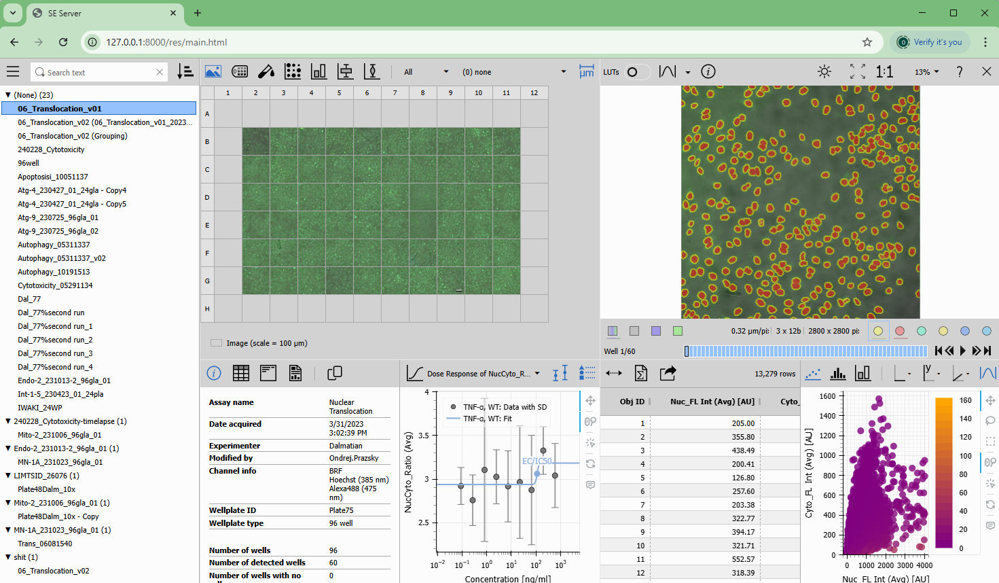

This is the simplest installation where the server accepts requests only from the current machine. Because of this significant limitation we can skip the https and SSL certificate configuration.
The server needs a configuration file from the Platform folder on the Acquisition machine (will call it SE Platform). The folder is located here:
C:\ProgramData\Laboratory Imaging\Platform
The server reads the folders users acquire to as defined in the settings dialog:
Therefore following must ne ensured:
The simplest way is to run the server as Administrator and Share the drive C: (and others if necessary) on the SE Acquisition machine.
Suppose the SE Acquisition machine is named SEMACHINE and C: drive has been shared. Executing following command runs the server:
SEServer.exe --not-secure --se-platform "\\SEMACHINE\C\ProgramData\Laboratory Imaging\Platform"
If everything went well the output looks like this:
Using LDAP server at: your.dns.domain
Users will be authenticated as: <username>@YOURDOMAIN
SE settings will be taken from: \\SEMACHINE\C\ProgramData\Laboratory Imaging\Platform
[2025-02-04 09:18:47 +0100] [31488] [INFO] Running on http://127.0.0.1:8000 (CTRL + C to quit)
Open your browser and try to put this http://127.0.0.1:8000 into the address bar.
Insert your Windows account credentials. If successful the folder specified in NIS Elements Assay Settings should be listed:
To authenticate Windows users the server uses your domain LDAP server. By default it looks into USERDNSDOMAIN system environment variable. It can be overridden by LDAP_SERVER environment variable or --ldap-server command line option.
The username entered into the dialog is is used together with the domain name <username>@YOURDOMAIN. The domain name is taken by default from USERDOMAIN system environment variable. It can be overridden by SE_USERS_DOMAIN environment variable or --se-users-domain command line option.
To authenticate Windows users the following code is used:
from ldap3 import Server, Connection, ALL
server = Server(_ldap_server, get_info=ALL)
try:
conn = Connection(server, f'{username}@{_se_users_domain}', login_form.password, auto_bind=True)
conn.unbind()
except Exception as e:
raise HTTPException(status_code=401, detail="Invalid credentials")